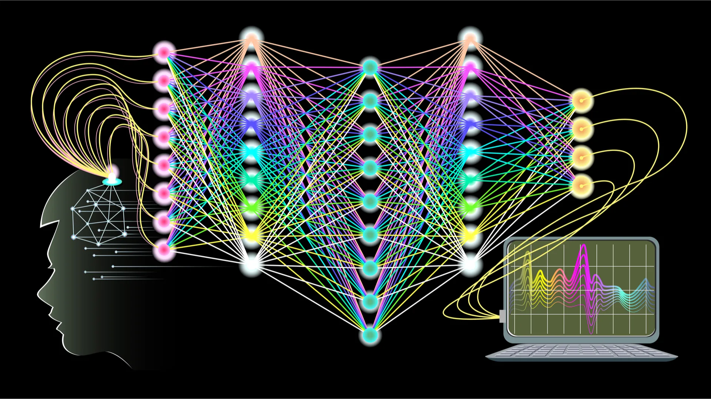

Введение
Искусственный интеллект (AI) — это область компьютерных наук, занимающаяся созданием систем, способных выполнять задачи, требующие человеческого интеллекта, такие как распознавание речи, принятие решений и обучение. Основные направления AI включают машинное обучение, нейронные сети и обработку естественного языка.
AI находит применение в различных сферах, включая медицину, промышленность, сельское хозяйство и образование. Он способен анализировать большие объемы данных, выявлять закономерности и принимать решения на их основе.
История AI
Идеи создания машин, обладающих интеллектом, возникли еще в Древней Греции. В 1956 году термин «искусственный интеллект» был введен Джоном Маккарти на конференции в Дартмутском колледже. С тех пор AI прошёл путь от простых программ до современных нейросетей, способных обучаться и принимать сложные решения.
Ключевые этапы в развитии AI включают:
- Создание первых нейронных сетей и алгоритмов машинного обучения
- Развитие экспертных систем в 1970-1980-х годах
- Появление глубокого обучения и больших данных в 2010-х годах
- Интеграция AI в повседневную жизнь через голосовых помощников и рекомендательные системы
Машинное обучение
Машинное обучение (ML) — это подраздел AI, который позволяет системам автоматически обучаться на данных и улучшать свои результаты без явного программирования. Существует несколько типов ML:
- Обучение с учителем (Supervised Learning)
- Обучение без учителя (Unsupervised Learning)
- Обучение с подкреплением (Reinforcement Learning)
ML используется в распознавании изображений, обработке естественного языка, прогнозировании и многих других задачах.
Применение AI
AI находит широкое применение в различных сферах:
- Медицина: диагностика заболеваний, анализ медицинских изображений
- Финансы: обнаружение мошенничества, алгоритмическая торговля
- Промышленность: предиктивное обслуживание оборудования, оптимизация процессов
- Образование: персонализированное обучение, автоматическая оценка знаний
- Транспорт: автономные транспортные средства, управление трафиком
Курсы
Основы AI


Обработка естественного языка (NLP)
Научитесь анализировать и обрабатывать текстовые данные.
ЗаписатьсяПродвинутый AI